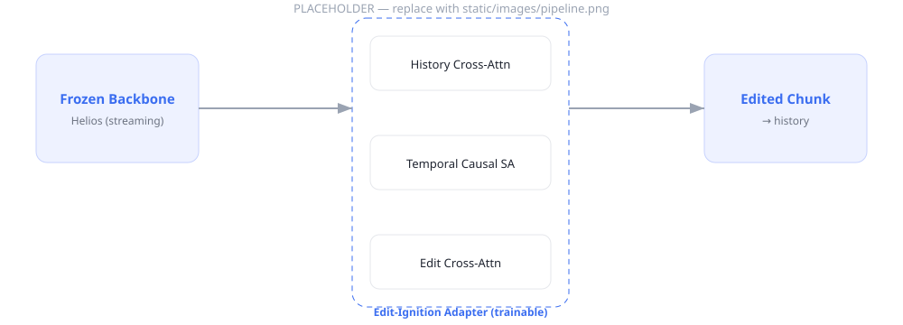

Traditional video editing operates in place: it transforms a fixed-length clip frame-by-frame against the source. We instead study streaming video editing, where an edit produces a temporally subsequent segment that continues an ongoing stream, and where a sequence of instructions can be applied in turn so that each edited segment becomes the conditioning history for the next — enabling unbounded sequential editing.
Built on a frozen streaming long-video generator, our method attaches a lightweight Edit-Ignition Adapter that injects an instruction while preserving temporal consistency, leaving every base weight untouched. At inference, the adapter “ignites” an edit on a single chunk and the frozen backbone propagates it through history; an anchored sliding-window keeps memory constant so edits can be stacked forever without drift. (Placeholder abstract — replace with the final text.)

Overview. A frozen streaming backbone (Helios) generates chunk-by-chunk; a trainable Edit-Ignition Adapter (History Cross-Attention → Temporal Causal Self-Attention → Edit Cross-Attention) injects the instruction. Replace this placeholder with your real figure.
A single instruction applied to a source clip produces the next, edited segment. We show one case per category; hover (or tap) an instruction to read it in full.
Each row is one editing chain. The left-most clip is the source; every arrow applies a new instruction on top of the previous result. Scroll a row horizontally to follow the chain.
Naively swapping the backbone's scene prompt for the edit instruction (Helios baseline) vs. our adapter. Comparison rows (tag 'compare') render below.
@article{infinityedit2026,
title = {InfinityEdit: Streaming Infinite Video Editing},
author = {Author One and Author Two and Author Three and Senior Author},
journal = {arXiv preprint arXiv:XXXX.XXXXX},
year = {2026}
}